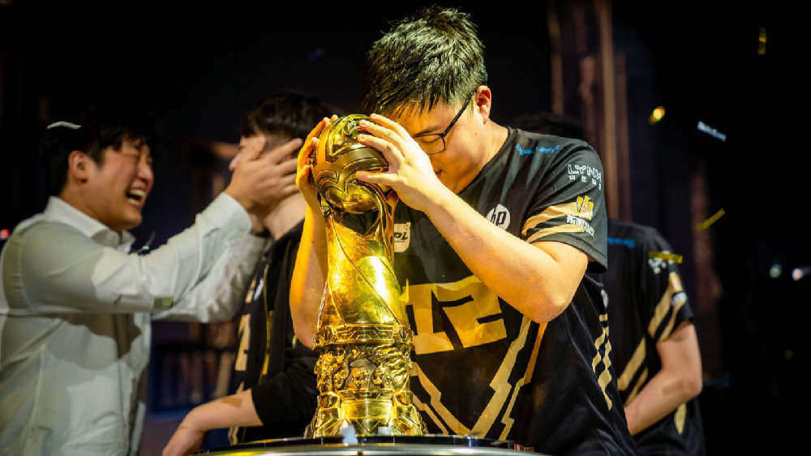

第一部分·天才少年，出道巅峰
（备注：本文所有时间，均用联盟历计算，记2011年即S1赛季为联盟元年，2010年为联盟前元年）
简自豪 Uzi
RNG·UZI，本名简自豪，别号“乌兹”，湖北宜昌人也，联盟前十四年（1997）生。荆襄九郡，人杰地灵，自古豪杰并起，不可胜记，而电竞尤甚。宜昌简自豪、武汉明凯、黄冈喻文波，皆当世英杰。
有童谣赞此三人曰：“乌兹乌兹好风光，国产射手世无双。内战幻神数明凯，天下野区皆猪场。外战阿水称英豪，出道冠军少年郎。荆楚大地多才俊，中华电竞威名扬。”
自豪年幼，不好读书，家有中产之资，故其面有富态。及少，益爱电竞。联盟二年，其家迁至惠州，自豪沉湎数日，耳不闻窗外之事，其父患之。彼时联盟国服初立，天下英雄共逐鹿之，皆以分数高低臧否人物，而自豪以“狂小禹”之称纵情峡谷，所向披靡，足有一千七百分之多。其对线凶狠、好杀伐，峡谷中有项籍力能扛鼎之威，然喜怒自形于色不逊于霸王，常矜功自傲，路见不平辄狂喷不止，时人号之“狂小狗”。然其对线之强，操作之细，时海内可比之者，鲜矣。自豪征战于一屋之中，而盛名传于千里之外。时坊间有传闻曰：“狂小禹，狂小狗，打遍国服无敌手。”
初，皇族新立，欲扬威宇内，广收天下英才。时WE称霸久矣，IG稍弱，与之争锋，皇族欲因其便利、成鼎足之势，遂邀自豪。然联盟电竞伊始，前途未卜，其父深忧，欲以学业为由拒之。自豪喟然叹曰：“天赐良机，大丈夫岂可碌碌无为如庸人？”父母遂同往，观皇族基地后，皇族劝曰：“父母爱子则为之计深远，今天佑自豪，赐奇才如此，勿负之。”其父母曰：“善。”乃签约皇族，自豪电竞传奇之路，自此而始。后有童谣曰：“天下无数读书郎，少之一人又何妨？自豪不入电竞门，此生安得名人堂。”
联盟二年，自豪入皇族，司职射手，自取号为“UZI”，乌兹者，枪械、兵器也，欲持神兵利刃，冲锋陷阵，可称万人敌。冬十一月，TGA冬季赛，乌兹初出茅庐，半决赛对决华义，其五杀韦鲁斯震惊世人。后有童谣曰：“狂小狗，好猖狂，初登赛场五杀忙！料微笑，当提防，长江后浪推前浪。”至决赛，皇族迎战卫冕冠军WE，国内莫能当之，射手微笑称霸国内比赛非一时之功，而自豪年方十五，虽对线未落下风，然底蕴差距渐显，后皇族终落败。
联盟三年春，职业联赛立，皇族帐下上单神超，尚为人；打野Lucky，常号“蜘蛛侠”；中单Wh1t3zZ，呼之White，人称之“世界第一小鱼人”；射手乌兹，彼时仍号“狂小狗”；辅助tabe，擅安妮辅助，殊于常人。时人因White、Lucky发型特立独行，常讥皇族为“杀马特”。春季常规赛皇族力战WE，再度饮恨，尔后力挫OMG众将，然队伍起伏，难创伟业，后OMG夺春季赛冠军。
夏，皇族益强，自豪以女警、男枪立威，常以身犯险，大破敌众。皇族异之，乃创“四保一”战术，自豪如鱼得水，独退天下英豪。其年，S赛入围之争乃在季后赛之前，皇族一天九战，以下克上，可谓荡气回肠、意气风发。首战即惨负OMG，尔后败者组力挫IG，决战复仇OMG，以LPL一号种子晋级S3。后有小诗曰：“一日九战世所惊，皇族昂首取头名。神州大地共翘首，不知可否有冠军？”
联盟三年秋，皇族、OMG出征S3，彼时联盟之热，开电竞数十年未有之盛况。网吧之内，莫不争之；街头巷尾，莫不议之；妇孺老少，莫不知之。故S3之瞩目，远胜S2。皇族直进八强，而OMG入小组赛，七胜一负出线。然则天不佑彼，二者八强相遇，憾也。二虎相争，则必有一伤。皇族挟入围赛之余威，逞上将乌兹之骁勇，兼神超大将之长风，并white支援之迅猛，连下两城，OMG授首。此战正酣时，千钧一发之际，神超兰博火烧峡谷，OMG溃不成军，乌兹于上路草丛斜刺里杀出，薇恩一骑当千，绕后射杀OMG众人，一夫当关，万夫莫开，乌兹于百万军中取上将首级，可称探囊取物，尔后安然而归，西洋解说喟叹曰：“He’s still alive!”后传为一时美谈。乌兹以四保一上将之重，孤军绕后身赴重围，先于行伍，独破众将，一如当阳长坂赵子龙，所向披靡，射手绕后，当世所殊也。后起小点薇恩单骑五杀者屡见不鲜，故非之者众。然以彼时之联盟，于S赛舞台成此细腻操作者，唯此一人耳，安能以后世之眼光，夺往日之荣耀？
后单有一篇论此操作：“火如博望烈，风似当阳疾。万马陷军阵，一将出单骑。闪现解重围，翻身破强敌。日暮凯旋归，身未着片羽。”
后皇族四强迎战FNC，彼远古豪门、S1冠军，非可小觑，然皇族三胜一负取胜，开FNC不胜皇族、乌兹之先河。及至决战SKT前夕，众说纷纭，彼时SKT Faker之强，罕有对手。皇族中军大将White，本名卢本伟，尝有记者访之：“君与Faker孰强？”其笑曰：“高丽李相赫？不足为惧耳，五五开而已，吾亦常单杀之。”然决赛之时，中路屡战屡败，faker三胜之；神超惨被三禁鳄鱼，大木贾克斯杀穿，成卢本伟梦魇；打野Lucky，数线劣势而不敌，上背锅山；乌兹被强压塔下，猪让塔下一Q，乌兹金身告破。SKT连下三城，桂冠加冕、王朝新立，一扫六合而称霸。而皇族首入世界赛，乌兹以不足十七，束发而未及弱冠之年，取世界亚军之名，纵未有盖世之伟业，也不至广受辱骂、见非于众人。
联盟三年冬，未能凯旋，归国，然受辱于天下，皇族众将勇而见疑，强而被谤，能无怨乎？盖木秀于林,风必摧之;堆高于岸，流必湍之;行高于人,众必非之。彼时皇族非弱，然舆论之意，亚军非荣誉，而皇族支持者寡而嘲讽者众。积羽沉舟，群轻折轴，众口铄金，积毁销骨，是故蜘蛛侠、卢本伟退，tabe离队，神超远赴北美。后有童谣曰：“人心奈何不知足，既得陇，复望蜀。尔后六年无冠日，当知亚军未尝辱。”
联盟四年春，皇族危，新人难堪重任，乌兹强撑，甚乃至于中路。彼时卢本伟笑称：“若能国服登顶，吾当两刃插刀、复出助汝。”自豪以希维尔连胜登顶国服，复问之。然其见小利而忘大义，图小名而失大节，笑曰：“噫！吾戏言耳。”后遂罢，乌兹艰难保级。时有诗曰：“天才射手保级难，为酬三顾转中单。一夜登顶丹心现，原知兄弟是戏言。”
夏，皇族引新援insec、zeros，窘境稍解，皇族乃渐回强队之林。时战IG，乌兹再以薇恩应战，于中路塔前，豪取五杀，举世皆惊。时两队中路鏖战，乌兹正面切入，连斩中辅二人，后走位巧躲酒桶爆破酒桶，旋即闪现躲皇子天崩地裂，然闪现之时、圣弩已发，鲟将军卢锡安再倒，彼时酒桶之滚动酒桶已出，乌兹秒E将酒桶直定墙角，翻身后直落皇子，再由insec顶住防御塔，乌兹巧取五杀，现场掌声雷动，乌兹一扫春之愁容，开怀狂喜。单有一篇道此战：“风雷突起云变色，中军帐前起干戈。弓如秋月行天远，箭去流星石棱没。闪现瞬躲嘉文大，侧身巧拒酒桶酌。豪取五杀开怀笑，一曲高歌壮山河！”
自豪年少称英雄，然恰如其名，UZI乃为兵器，非为帅才。神兵利刃可破敌一千，若难驭之，当自损八百。乌兹有神兵之锐利，而又有其桀骜之气。XCS半决赛，乌兹强选薇恩，迫Insec卢锡安打野，解说难圆之，遂败King战队。后乌兹似心有郁结，又发博曰：“吾不意征战S赛，窃思去与否，似无所异也”。世人皆惊恐。后其谈笑自若，知负一时之气也。时EDG初立则势不可挡，其以大将军明凯为帅，娜美为将，包揽春夏两冠。自豪并皇族诸将季后赛2-3憾负OMG，仅获八强，然众将杀出选拔赛重围，后随EDG、OMG出征S4。
联盟四年秋，三队小组赛皆奋力出线，共赴高丽。皇族勇夺小组第一，遇北美幻神TSM，其丹麦新晋法王比尔森，世所谓“一神带四眼”者，乌兹小炮将其如炮车般补杀，皇族之威，不逊去年。后有童谣笑曰：“鸿蒙初开北美盛，今已疲敝称幻神。不知炮车三百块，原来君名比尔森。”
盖世事无常，终难料及，内战之事，竟再重演，皇族遇EDG，其建队之初，虽驰骋国内，然世界赛经验全无。皇族鏖战五局，EDG之射手娜美缘一碗牛肉面未解之谜，竟状态全无，乌兹数碾压之。皇族再入半决赛，彼时OMG小组赛以护国螳螂惊险涉关，后零封白盾，天下共贺之。孰料其再为背景板，半决赛中韩各自内战。三星白3-0完杀三星蓝，皇族鏖战五局，力克OMG。乌兹世界赛之发挥，堪称强劲，有如神兵，弹无虚发。时隔一年，乌兹率皇族再入世界赛决赛，然攻守之势异也，去载魔王新立，卢本伟尚可大言五五开，而今白队之强甚于SKT，决赛几无胜算，皇族1-3再负白队，时白队imp笑言：“战正酣，尚未足十分力也”。后人所谓“星不散，勇夺冠”，三星之强，可见一斑。然皇族再夺亚军，坊间内战保送之言屡见不鲜，更有无端之言纷纷扰扰。后皇族遂降级焉。坊间有传言曰：“内战内行，外战外行。两年亚军，不知谁强？”后又有驳之曰：“今有人三入中考而不过，乃自称可入清华，何也？”成王败寇，自有公论，假设之论，终不过逞一时之口舌。
后人叹此两年乌兹辛酸曰：
“一代天骄两连亚军，命途多舛，怜征途三载未能加冕，鏖战四局终憾负，今日再别五虎；
十子英才九天揽月，输之无愧，叹联盟八年方有冠军，奋战七届而不得，明朝当扫六合”